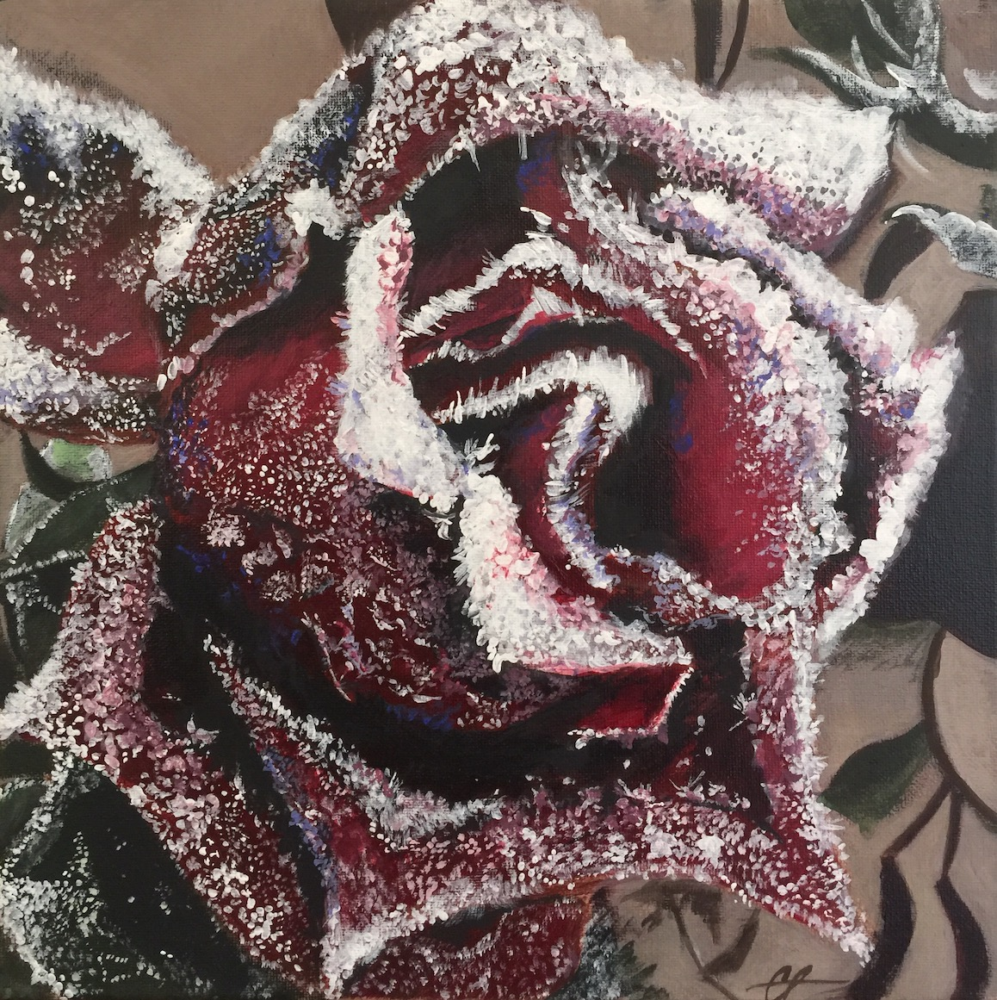
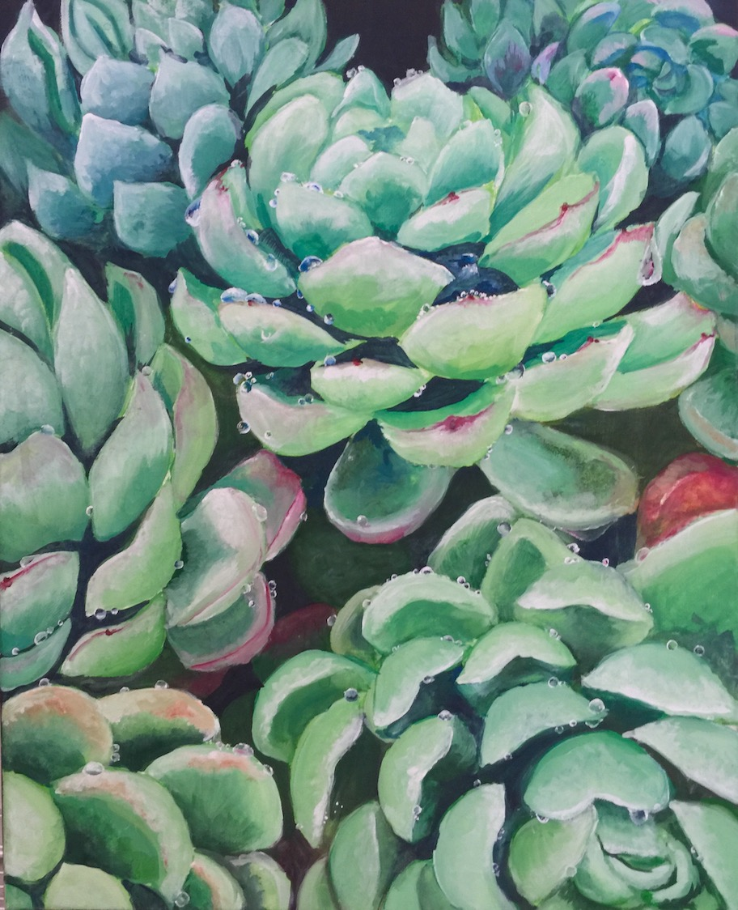
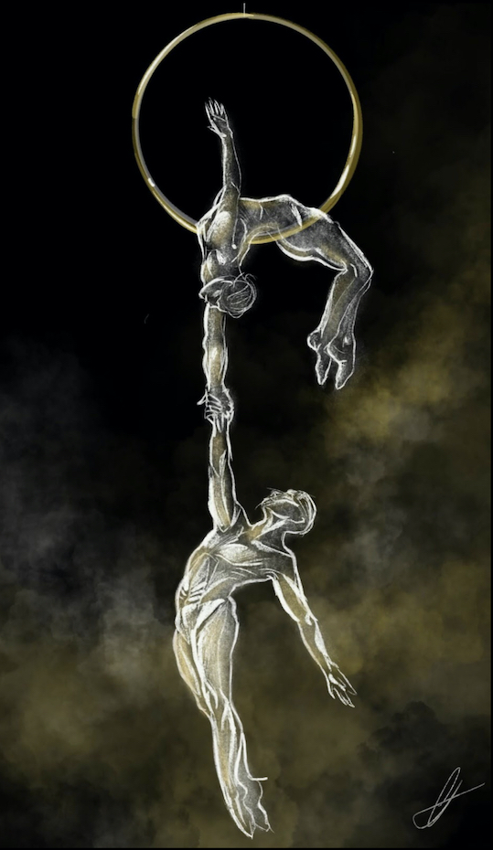

Some of my favorite works that I made were the singular rose, the succulents, and the two suspended
gymnasts. The rose is covered in frost, and I wanted to recreate it with my skills and abilities that
I had back in high school. I first drew the basic shapes of the petals and the background, and started
to detail the look of the snow and frost. From what I remember, it took nearly six to eight hours creating
it, and I felt so happy with how it turned out. To make it more dimensional, I also added blue accents
to accentuate the white and red of the picture.
The succulents were from my grandma’s garden, and the day before it had just rained. The succulents had
tiny dewdrops on it, and I took a picture of it to recreate it. I wanted to practice using light colors and
seeing how it would work when making dewdrops that were just as bright.


Lastly, the gymnasts one was so that I could practice my human anatomy drawing. Drawing the human body
is some of the toughest parts of art, making sure that everything is proportionate as well as anatomically
correct. This drawing let me practice drawing the female and male anatomy, and my favorite figure drawings
are gymnasts or contortionists. The human body will accentuate certain muscles and give interesting poses,
which is why drawing human figures is one of my favorite pass times.